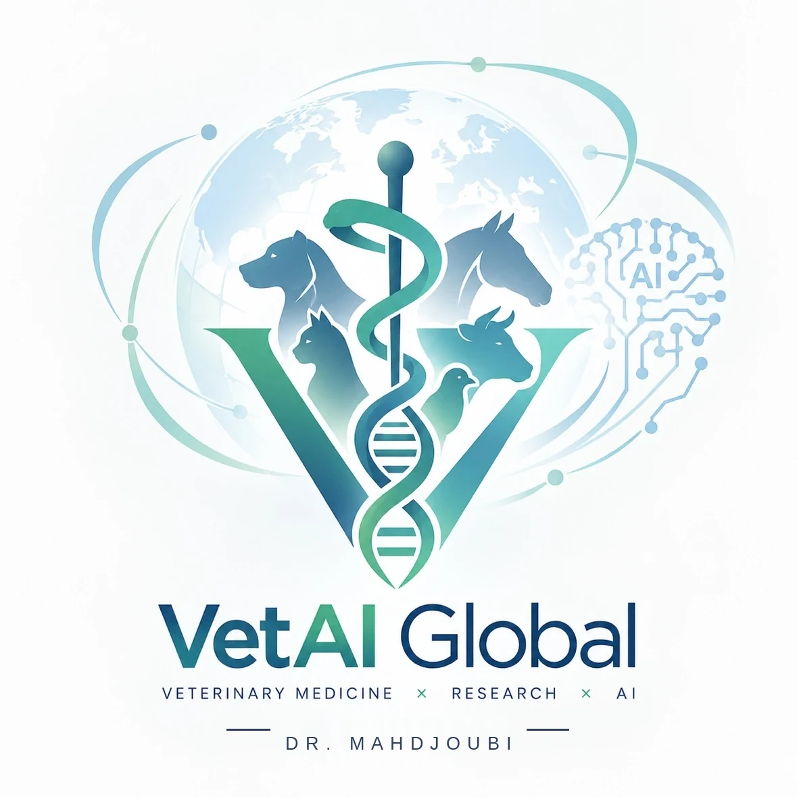

VetAI Globalجولة في المنصة
تحليق قصير فوق صفحة VetAI Global — من المعرفة إلى رعاية أفضل. الفيديو تعريفي فقط، ومحتوى المنصة تعليمي ولا يغني عن الطبيب البيطري.
الفيديو قيد الإنتاج حاليًا — ستعمل هذه الصفحة فور وضع ملف showreel.mp4 في نفس مجلدها، دون أي تغيير آخر.
صفحة مستقلة: إضافة أو حذف مجلد showreel لا يغيّر أي قسم أو تصميم في بقية الموقع.